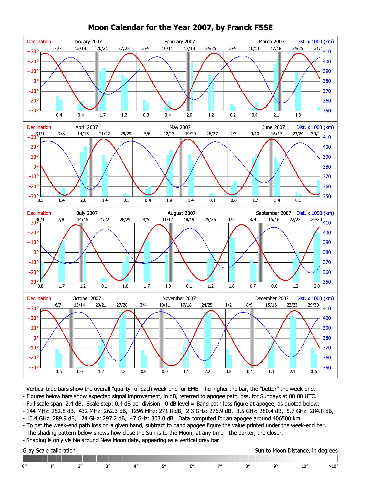
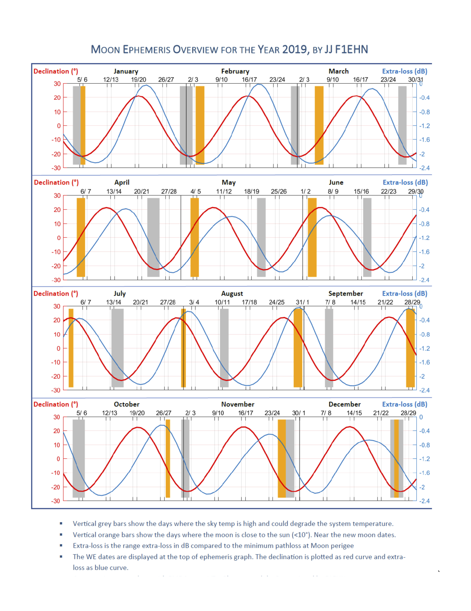
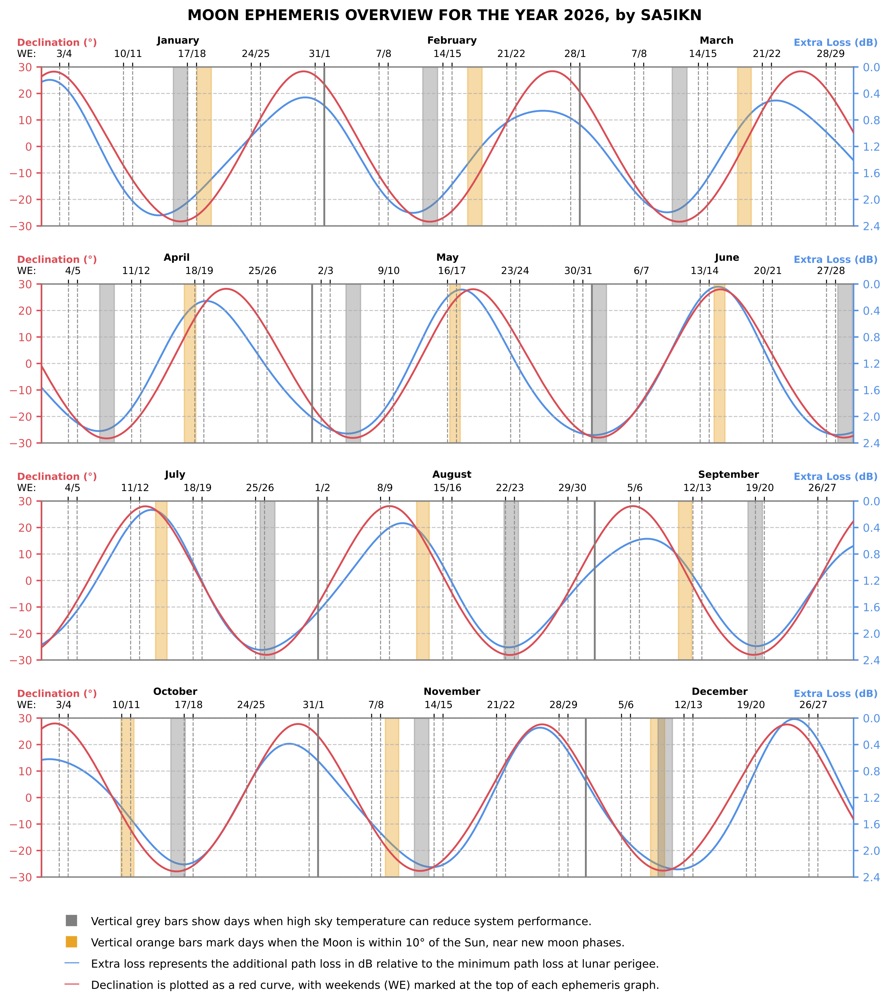

The Role of the Yearly Moon Ephemeris
The annual EME Moon Ephemeris has become one of the most practical and widely used planning tools in the EME community, offering a complete visual summary of lunar conditions across an entire year on a single printable page.
It brings together the key parameters used in everyday EME operation: moon declination, distance-related added path loss, moon–sun separation, and moon–Sgr A separation. Having these metrics in one place allows operators to quickly identify the most favorable periods for skeds, contests, and activity.
Unlike conventional EME planners that focus on individual dates or narrow time windows, this format provides a broader perspective. At a glance, it reveals how conditions evolve over weeks, months, and the full year. Weekend markers further highlight where peaks in EME activity are most likely to occur.
The familiar graphical style was originally introduced by Franck F5SE around 2005, and later carefully refined by Jean-Jacques F1EHN following Franck’s passing in 2017. Over the years, the annual ephemeris became a trusted reference within the EME community, regularly appearing in 432 MHz and Above EME Newsletter, Radio REF Magazine, and DUBUS.


Rebuilding the Ephemeris
After the passing of Jean-Jacques F1EHN, Peter G3LTF, editor of the 432 MHz and Above EME Newsletter, began searching for someone to continue producing the yearly ephemeris in its established format. I took on this role in September 2025.
As Jean-Jacques’ original code was no longer available, the ephemeris had to be rebuilt from the ground up. The goal was to transition to a modern astronomical framework while preserving the clarity, structure, and visual language that operators had come to rely on. This was both a tribute to the work of F1EHN and F5SE, and a recognition that the format itself has stood the test of time.
With prior experience developing a next generation EME Planner (EME Observer) along with my own microwave EME antenna tracker, and a background in theoretical physics, the process was both technically engaging and enjoyable. The result closely follows Jean-Jacques’ original design, helping ensure continuity.

How to Access the Ephemeris
Yearly PDF Ephemeris (2025–2040)
The full set of printable yearly ephemeris charts is hosted at EME.RADIO
Interactive Ephemeris
An interactive version is also available.
It preserves the same visual structure as the printed charts, while allowing to see the actual values via hover interaction. The tool supports any year from 1900 to 2100.
The ephemeris is also integrated into the DL7APV EME Calendar maintained by Zdenek OK1DFC.
How to Read the EME Moon Ephemeris
The yearly overview is divided into four horizontal panels, with each panel representing one quarter of the year. Two curves and two types of vertical bars are shown on each chart. Weekends are marked on top of each panel.
The red curve represents the Moon’s declination — its angular distance from the celestial equator — which determines how high the Moon rises above the horizon. Higher declination results in greater elevation for stations in the northern hemisphere, where most EME activity takes place.
The blue curve shows the additional path loss in dB relative to perigee. As the Earth-Moon distance varies, so does the signal attenuation. Lower values on this curve indicate more favorable conditions for EME operation.
Orange bars mark periods when the angular separation between the Moon and the Sun drops below 10 degrees. During these intervals, solar noise can significantly degrade reception, particularly on lower frequency bands where antennas have a wider beamwidth. On higher microwave bands, especially 10 GHz and above, most systems are far less affected unless very small antennas are used.
Grey bars indicate when the angular separation between the Moon and the center of the Milky Way falls below 10 degrees. Sagittarius A, located at the center of our galaxy, is one of the strongest radio sources in the sky. Its emission can raise the noise floor, particularly on VHF and UHF bands. Its influence decreases rapidly above 1 GHz, making it largely negligible for most microwave EME operation.
As a general rule of thumb, the best EME conditions occur on days with higher lunar declination and lower additional path loss.
73, de SA5IKN